N.C. Jindal Public School
Punjabi Bagh, New Delhi
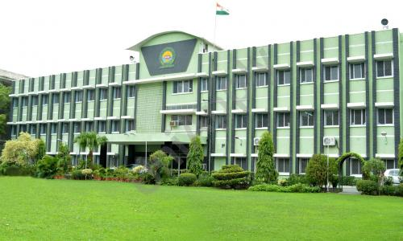
About the School
N.C. Jindal Public School, located in West Punjabi Bagh, New Delhi, is one of Delhi's most respected educational institutions. Established in 1966 by the Net Ram Chandrawali Devi Jindal Charitable Trust, the school has built a proud legacy of over five decades in nurturing academically excellent and socially responsible students.
A CBSE-affiliated co-educational school running classes from Pre-school to Class XII, NCJPS is home to over 3,400 students. As a Battery Bin partner, the school hosts a dedicated battery collection point that empowers its large student community to make a direct, positive impact on the environment.
🌱 Why It Stands Out
- One of Delhi's oldest and most established CBSE schools, founded in 1966
- Over 3,400 students actively participating in eco-initiatives
- Recipient of the International School Award by the British Council (2013–16)
- Strong emphasis on character building, ethics, and community responsibility
- Battery Bin placed in high-visibility areas across the school campus
♻️ Sustainability in Action
With a student body of over 3,400 and a deeply rooted culture of civic responsibility, N.C. Jindal Public School is a powerful force for environmental change. The Battery Bin initiative aligns seamlessly with the school's vision of developing students who are not just academically accomplished, but also conscious global citizens.
Through battery collection drives and awareness activities, students learn firsthand that small, everyday choices — like properly disposing of a used battery — can collectively make a significant difference for the planet.
🗣️ What Students Say
🔍 Did You Know?
N.C. Jindal Public School's large campus and student community makes it one of Battery Bin's most impactful collection points in Delhi — with the potential to keep hundreds of batteries out of landfills each year!
📍 Battery Bin Locations
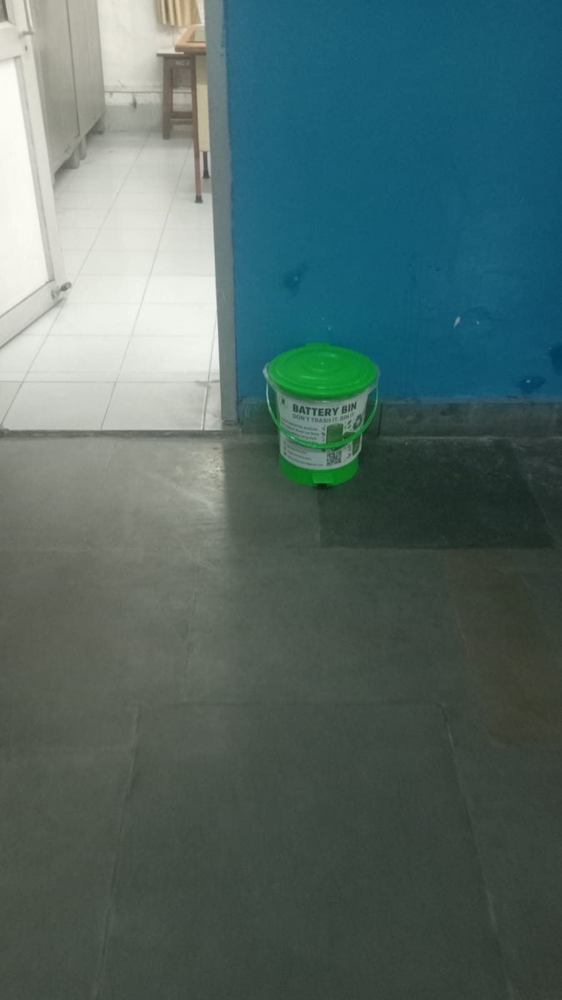
Battery Bin – Location 1
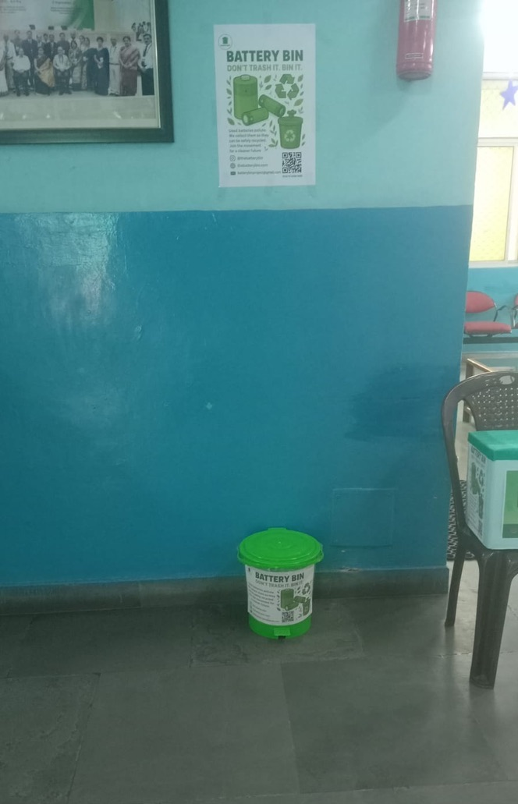
Battery Bin – Location 2
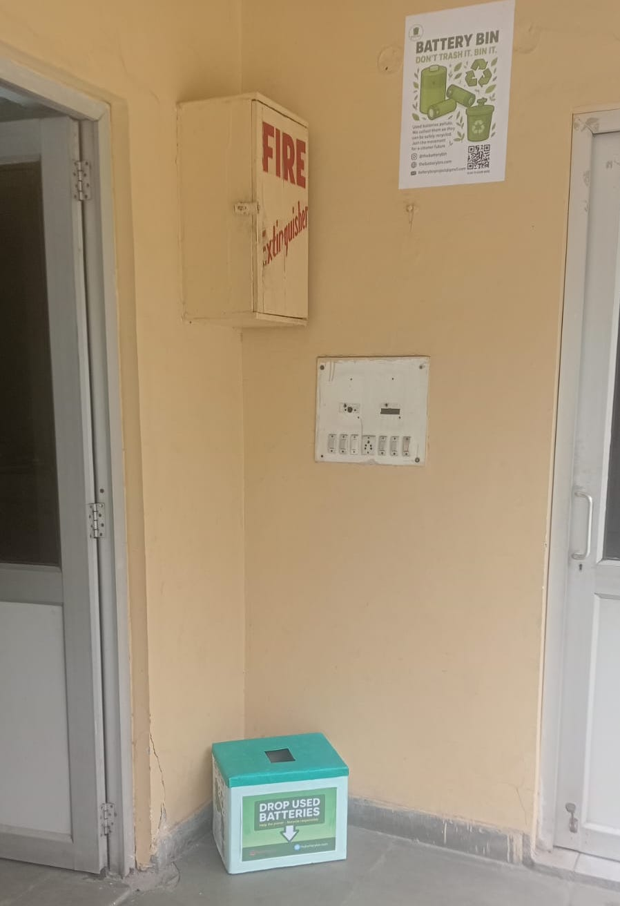
Battery Bin – Location 3
🪧 Awareness Poster Placements
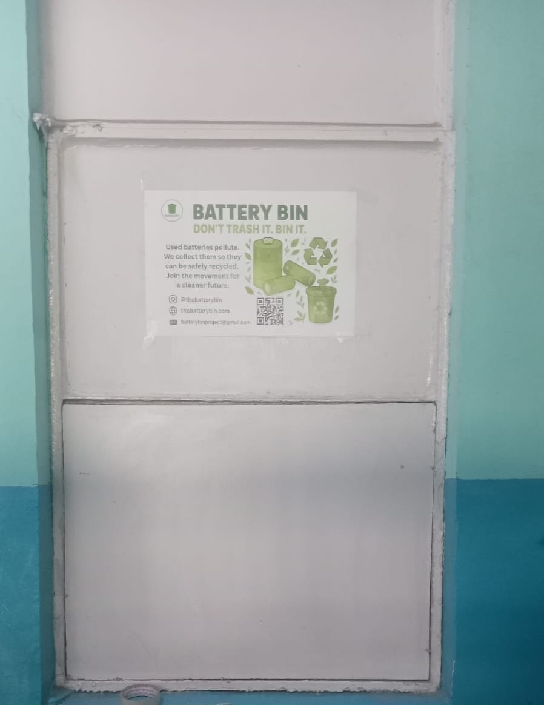
Awareness poster – Location 1
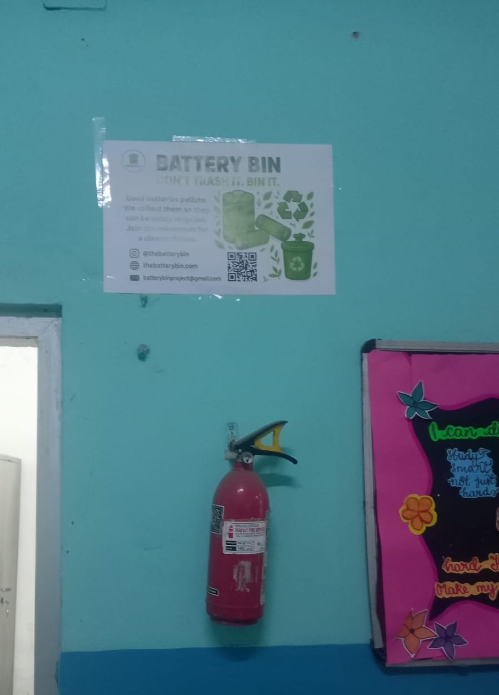
Awareness poster – Location 2
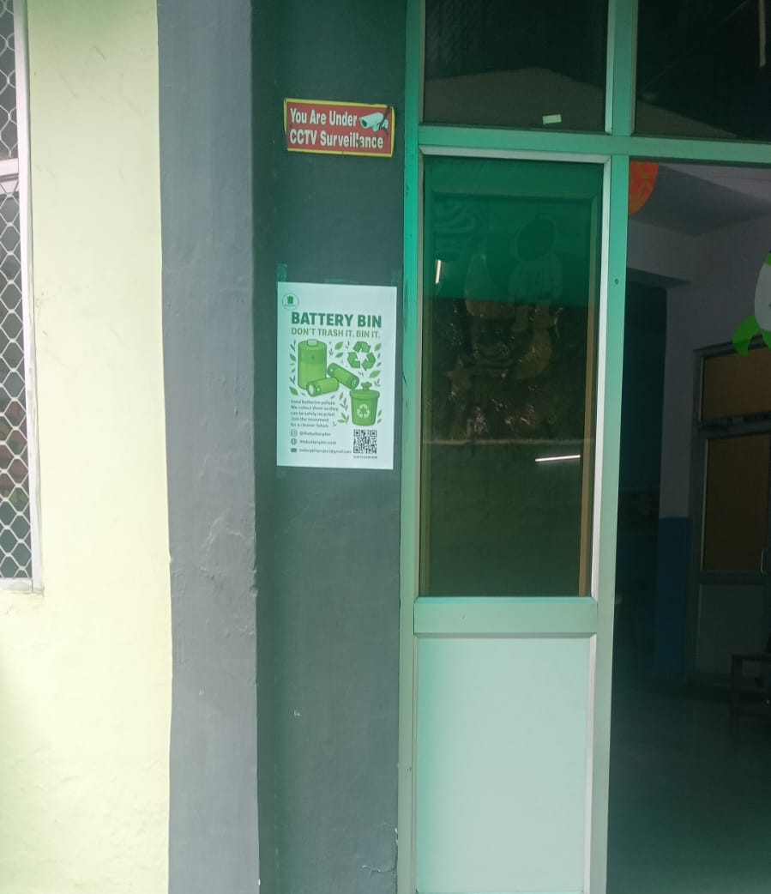
Awareness poster – Location 3
🏫 Classroom Awareness Sessions
Going beyond just placing a bin, we visited individual classrooms at N.C. Jindal Public School to speak directly with students — explaining how batteries work, what happens when they're thrown in regular waste, and how every child can make a difference by using the Battery Bin. The conversations were energetic, curious, and full of great questions.
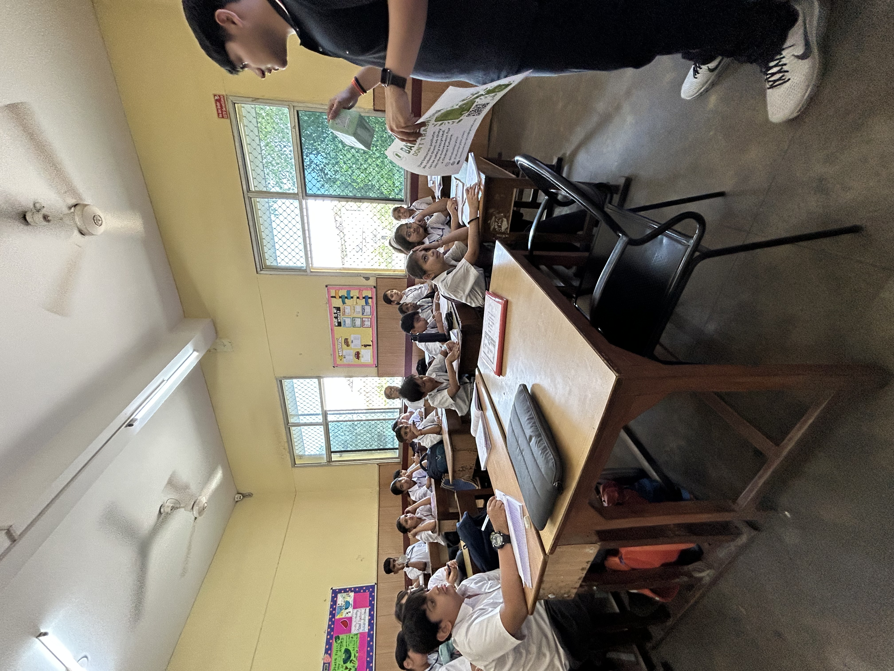
Awareness session with students
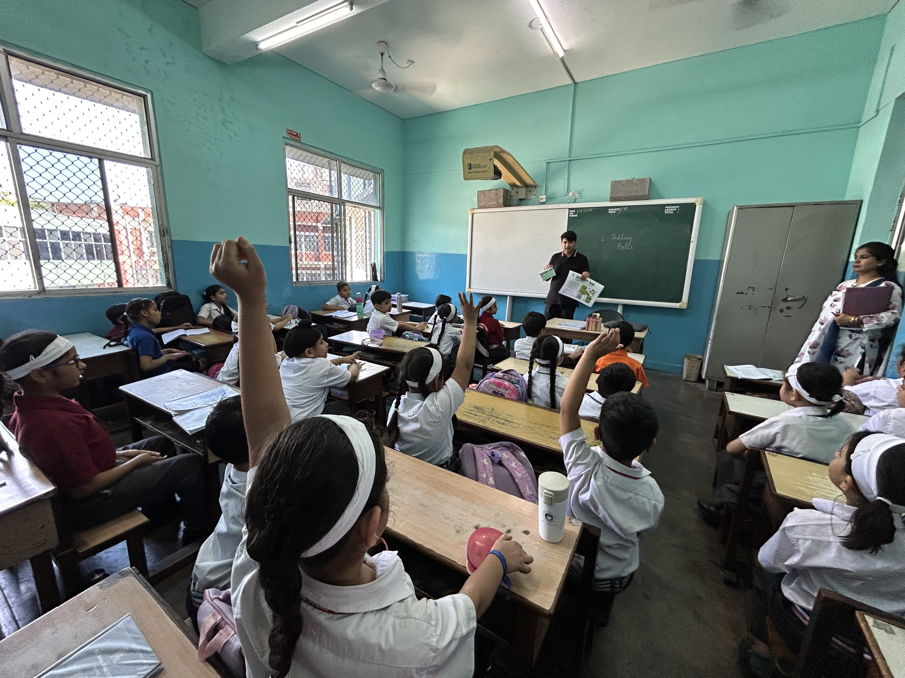
Engaging students on battery safety
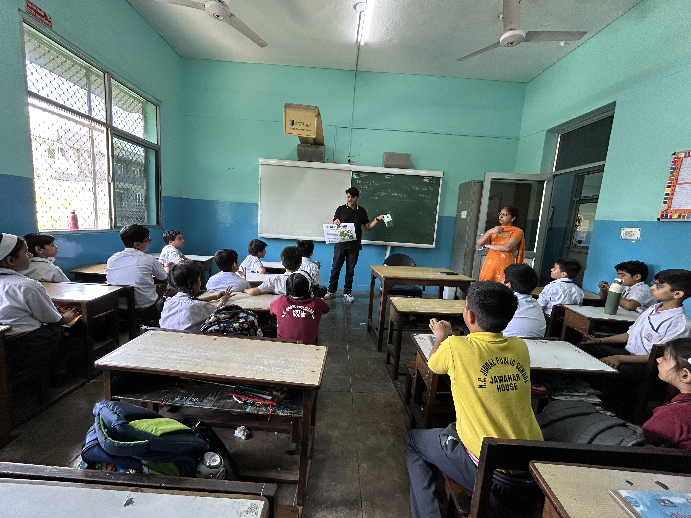
Interactive discussion in class
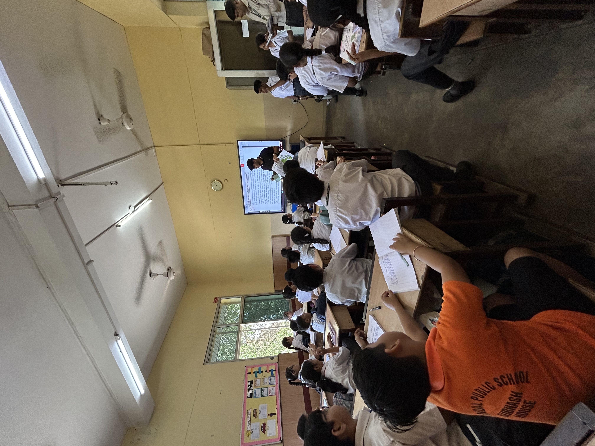
Students learning about battery recycling
📍 Address
N.C. Jindal Public School,
Road No. 73, West Punjabi Bagh,
New Delhi – 110026
🕒 Timings
- Monday: 8:00 AM – 2:30 PM
- Tuesday: 8:00 AM – 2:30 PM
- Wednesday: 8:00 AM – 2:30 PM
- Thursday: 8:00 AM – 2:30 PM
- Friday: 8:00 AM – 2:30 PM
- Saturday: 8:00 AM – 12:30 PM
- Sunday: Closed
📅 Established: 1966
🏆 Battery Recycling Recognition
Recognised for joining the Battery Bin initiative and championing responsible battery disposal across Delhi.

♻️ Why This Matters
A school with over 3,400 students carries enormous potential for environmental impact. By integrating battery recycling into its campus culture, N.C. Jindal Public School is turning everyday student activity into a powerful act of environmental stewardship — one battery at a time.